РАЗРАБОТКА УЧЕТНОЙ СИСТЕМЫ ДЛЯ ВЕДЕНИЯ ИНФОРМАЦИИ
О КАССОВЫХ ОПЕРАЦИЯХ
Сложность: *
Теги: индексы,
нумераторы, журналы документов,
регистр накопления остатков, работа с управляемой формой
ЗАДАЧА
Заказчик просит разработать учетную систему для ведения информации о кассовых операциях. Кассовые операции включают в себя приход и расход денежных средств с обязательным указанием контрагента и суммы.
Необходимо предусмотреть возможность выбирать из списка только те документы, в которых фигурирует выбранный пользователем контрагент.
Кроме того, нужно реализовать возможность просматривать остаток денежных средств в кассе.
Примерный вид журнала кассовых операций:
|
Дата |
|
Номер |
Тип документа |
Контрагент |
Сумма |
|
01.01.2020 |
|
001 |
Приход |
ООО «Мак» |
3000 |
|
03.01.2020 |
|
002 |
Расход |
ООО «Мак» |
7000 |
Подготовка
q Создать новую информационную базу.
q Открыть информационную базу в режиме «Конфигуратор».
q Открыть окно конфигурации.
Подробнее о том, как это сделать, смотрите в Лабораторной работе № 2 (стр. 17).
Выполнение
В первую очередь, следует разобраться с объектами аналитики, которые необходимо хранить в информационной системе. Однозначно нужно хранить информацию о контрагентах – это частные или юридические лица, с которыми будут вестись любые отношения. Для хранения контрагентов будем использовать справочник.
Определение
Справочник – это объект конфигурации, который хранит справочную информацию, например, перечень товаров или список сотрудников (более подробно про справочники можно прочитать здесь: https://v8.1c.ru/platforma/spravochniki/).
Создайте справочник «Контрагенты».
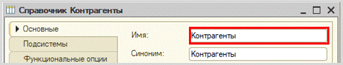
Запустите режим «1С:Предприятие» и добавьте несколько контрагентов.
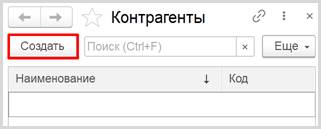
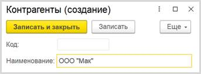
Обратите внимание, что поля «Код» и «Наименование» система сгенерировала самостоятельно при добавлении нового справочника. Эти поля являются стандартными реквизитами. Стандартные реквизиты платформа создает автоматически, исходя из свойств конкретного объекта конфигурации. Поле «Код» заполнять не нужно, система сделает это автоматически. Поле «Наименование» является обязательным для заполнения.
Таким образом, была реализована возможность хранения информации о контрагентах.
Как же регистрировать движения денежных средств? Для отражения денежных операций, как и любых других событий, в информационной системе потребуется объект конфигурации документ. Подробнее про документы можно прочитать здесь: https://v8.1c.ru/platforma/dokumenty/.
Добавьте новый документ «ПКО» (Приходный кассовый ордер, или другими словами –поступление денег в кассу).
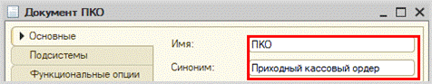
Запустите конфигурацию в режиме «1С:Предприятие». Попробуйте добавить документ «ПКО».
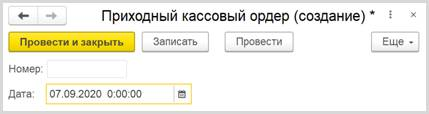
Любой документ может находиться в одном из двух состояний: подготовленный к свершению или совершенный:
q чтобы подготовить документ для использования в будущем, нужно его записать;
q чтобы отметить документ как совершенный – провести.
Одних лишь стандартных реквизитов для решения задачи недостаточно. Необходимо добавить свои реквизиты. Для этого откройте окно редактирования документа на вкладке «Данные» и добавьте реквизит «Контрагент» (тип – «СправочникСсылка.Контрагенты»). Данный реквизит будет хранить ссылку на элемент справочника «Контрагенты».
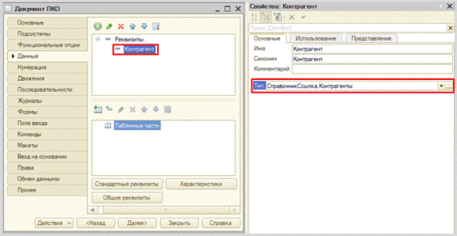
Далее нам необходимо добавить еще один реквизит, чтобы отслеживать, какую денежную сумму мы отдали или получили от контрагента. Для этого нужно добавить реквизит «Сумма», тип – «Число», точность – «2».
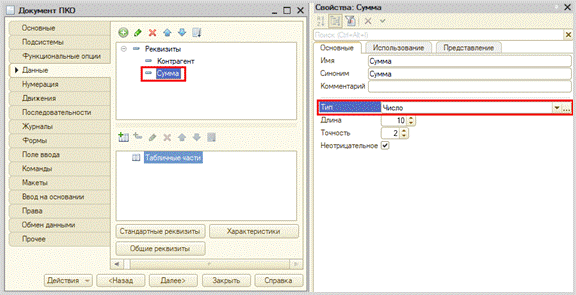
Запустите конфигурацию в режиме «1С:Предприятие» и посмотрите на изменения в документе.
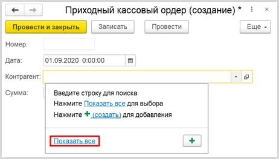
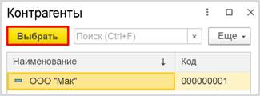
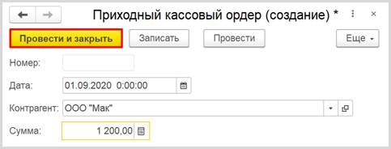
Добавьте еще несколько документов ПКО.
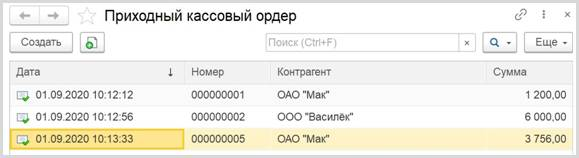
Аналогично документу «ПКО» необходимо создать и документ «РКО» (Расходный кассовый ордер). Можно повторить действия, описанные для документа «ПКО», а можно скопировать этот документ со всем его содержимым.
Для этого выделите нужный документ в окне конфигурации и нажмите на кнопку «Добавить копированием».
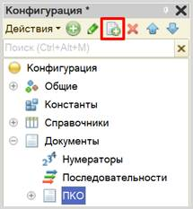
Появится документ, полностью копирующий документ «ПКО», – «ПКО1».
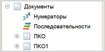
Необходимо переименовать документ «ПКО1» в «РКО».
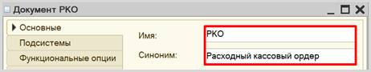
Перейдите на вкладку «Данные» и убедитесь в том, что реквизиты «Контрагент» и «Сумма» существуют и имеют правильные типы данных.
Теперь можно запустить систему в режиме «1С:Предприятие» и добавить несколько документов «РКО».
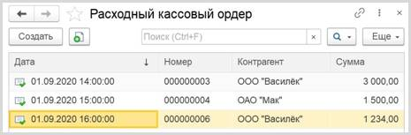
Таким образом, были реализованы документы, фиксирующие движение денежных средств. Но задача была поставлена так: все документы ПКО и РКО должны находиться в одной таблице. Причем добавляться эти документы должны по мере их создания.
Для решения этой задачи необходимо использовать объект конфигурации Журнал документов.
Определение
Журнал представляет собой отдельную таблицу, в которую будут попадать данные из указанных документов. В этом случае одинаковые данные будут храниться и в документах своего вида, и в журнале, тем самым будут дублироваться. Более подробно про журнал документов можно узнать здесь: https://v8.1c.ru/platforma/zhurnal-dokumentov/.
Добавьте новый журнал «Кассовые документы».
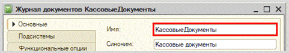
Переходим на вкладку «Данные». Здесь нужно указать, какие документы будут попадать в Журнал документов. Чтобы добавить документ, нажмите на иконку «зеленого карандаша».
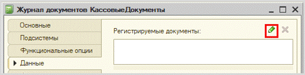
В открывшемся окне выберите два созданных ранее документа. Нажмите кнопку «ОК».
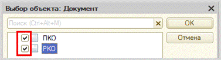
Давайте посмотрим на стандартные реквизиты журнала документов.
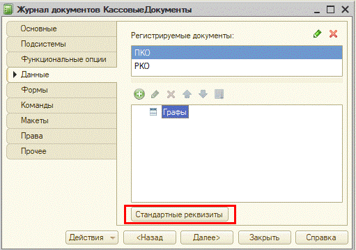
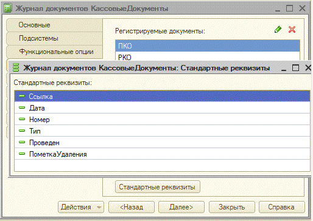
Интересующими нас реквизитами являются «Дата», «Номер» и «Тип» документа. Явно не хватает еще двух полей: «Контрагент» и «Сумма». В журнале это называется графа. Добавьте графу «Контрагент».
Далее нужно указать, из каких реквизитов данные будут попадать в графу. Для этого нажмите на кнопку «многоточия» свойства Ссылки. Выберите реквизит «Контрагент» из обоих документов.
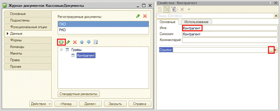
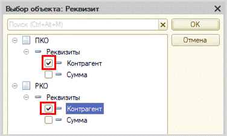
Аналогичным образом добавьте графу «Сумма». Ссылки настройте так же: сделайте источником графы реквизит «Сумма» обоих документов.
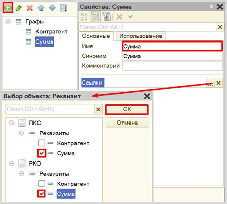
Запустите систему в режиме «1С:Предприятие» и проверьте работу журнала.
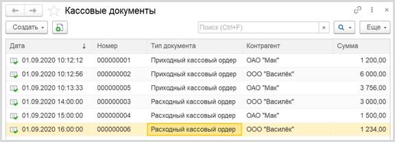
Можно настроить журнал документов и добавить отбор по контрагенту. Таким образом, можно быстро посмотреть на все документы, в которых фигурирует выбранный пользователем контрагент.
Для этого нажмите на кнопку «Еще» и выберите пункт меню «Настроить список…».
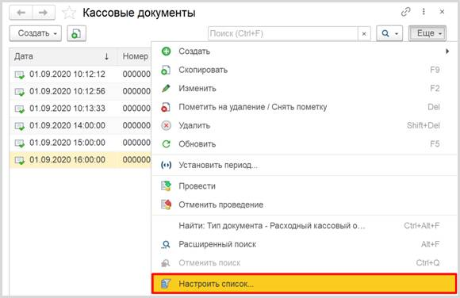
В открывшемся окне перейдите на вкладку «Отбор» и установите отбор по полю «Контрагент».
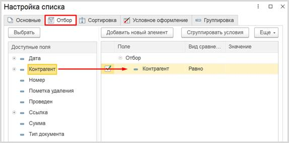
По окончании работы нажмите на кнопку «Завершить редактирование».
Попробуйте отобрать документы с каким-либо контрагентом.
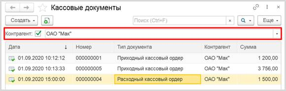
Таким образом, мы реализовали возможность хранить несколько видов документов в одном списке, а также делать отбор по контрагенту.
Можно ли теперь на основе этих документов узнать остаток денег в кассе? Можно, но для этого придется прибегнуть к грубому перебору всех существующих документов. Данный вариант является неправильным, потому что, если таких документов окажется очень много, система будет требовать большого количества ресурсов и времени.
Для решения данной проблемы и ускорения процесса извлечения данных создадим еще один объект – регистр накопления.
Определение
Регистр накопления – это такая итоговая таблица, которая может автоматически считать какие-либо элементы, например, денежные средства, материалы (дополнительно про регистры накопления можно прочитать здесь: https://v8.1c.ru/platforma/registr-nakopleniya/).
Создайте регистр и назовите его «Касса».
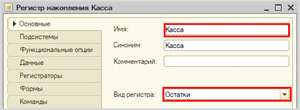
Для формирования структуры регистра переходим на вкладку «Данные».
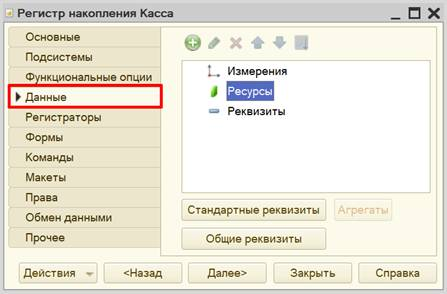
Структура регистра накопления отличается от структуры документа.
Добавим ресурс. Чтобы понять, что использовать в качестве ресурса, необходимо задать вопрос: «Что мы хотим накапливать/считать в данном регистре?». Мы хотим считать сумму. Следовательно, сумма и будет являться ресурсом. Тип данного реквизита – «Число».
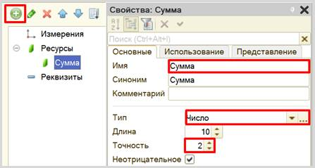
Чтобы регистр накопления заработал, нужно сделать следующее:
1. Определить источники данных, которые должны попадать в регистр (определить документы-регистраторы).
2. Описать, каким образом данные из документа-регистратора должны попадать в регистр.
Для определения документов-регистраторов переходим на вкладку «Регистраторы». Здесь нужно выбрать объекты, которые будут передавать данные в регистр. В нашем случае, это документы «ПКО» и «РКО».
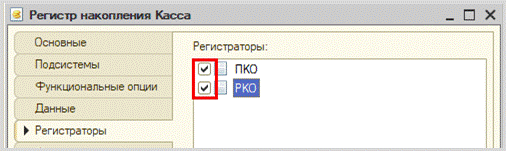
Далее требуется описать алгоритмы передачи данных для каждого документа. Откройте окно редактирования документа «ПКО» на вкладке «Движения». Воспользуйтесь конструктором движений.
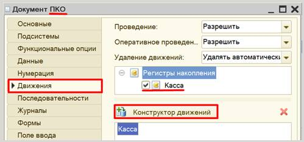
Окно конструктора движений состоит из нескольких областей:
q Левая верхняя область позволяет переключаться между регистрами (поскольку один документ может делать движения сразу в несколько разных регистров);
q Правая верхняя область описывает реквизиты документа-регистратора. Чтобы отобразить в данной области реквизиты табличной части нужно выбрать ее в соответствующем поле;
q В нижней части окна описаны реквизиты регистра накопления. Нужно заполнить поле «Выражение» реквизитами документа.
Поскольку поступление денежных средств должно увеличивать сумму денег в кассе, то тип движения регистра необходимо выбрать «Приход». Регистр будет обозначаться знаком «+» (плюс).
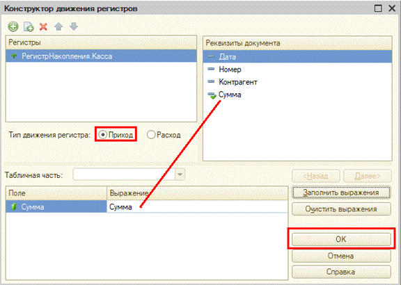
При нажатии на кнопку «ОК» система сформирует программный код, который при успешном проведении документа сформирует движения в регистр накопления, то есть скопирует данные из документа в регистр накопления.
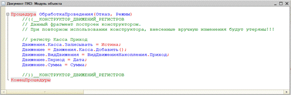
Аналогичные действия нужно совершить и для документа «РКО».
Откройте окно редактирования на вкладке «Движения» и нажмите на кнопку «Конструктор движений».
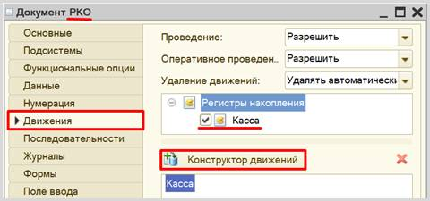
Окно конструктора движений заполняется аналогично, с одной лишь разницей: документ будет иметь тип «Расход», поскольку будет уменьшать количество денежных средств в кассе.
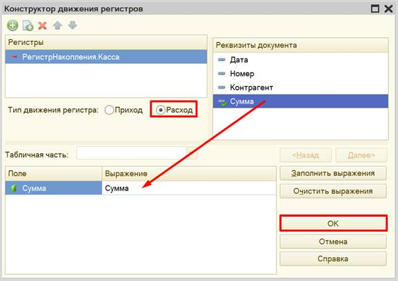
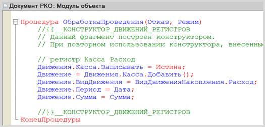
Откройте конфигурацию в режиме «1С:Предприятие».
В первую очередь, необходимо перепровести (провести заново) все созданные нами ранее документы. Это легко можно сделать в журнале документов. Убедитесь, что галочка для отбора документов по контрагенту снята и перед вами список всех созданных документов. Выделите все документы с помощью комбинации клавиш CTRL+A. Затем щелкните по документам правой кнопкой мыши и выберите пункт контекстного меню «Провести».

При проведении документов производятся движения (передача данных) в регистр накопления.
Обратите внимание, что на главной странице система не создала кнопку открытия регистра накопления. Это связано с тем, что все расчеты в регистрах накопления происходят в фоновом режиме, «за кадром», то есть пользователю о них знать не нужно вовсе. Поэтому по умолчанию регистры накопления настраивают так, чтобы пользователи не имели к ним доступа.
Но мы, будучи разработчиками, можем обратиться к любому объекту конфигурации. Для этого воспользуемся функциями для технического специалиста.

Среди перечня всех созданных нами объектов найдем регистр накопления «Касса» и откроем его.


Таким образом, мы можем убедиться, что регистр накопления является некой сводной таблицей, в которую попадают данные по некоторым алгоритмам. В дальнейшем из такой таблицы будет проще собирать какие-либо данные, чем открывать каждый документ по отдельности.
Осталось лишь вывести остаток денег в кассе на форму журнала документов.
Откройте вкладку «Формы» окна редактирования журнала документов и добавьте новую форму журнала документов.

Выделите следующие реквизиты для отображения на форме:

q Снизу находится область предпросмотра формы. Она позволяет лишь приблизительно понять, как будет отображаться данная форма для пользователя, поскольку может быть изменена с учетом множества различных факторов. Это своеобразная «иллюзия» того, что увидит пользователь.
q В правой верхней области находятся данные, которые мы вообще можем использовать в каком-либо виде на этой форме. Они разделены по вкладкам «Реквизиты», «Команды» и «Параметры».
q В левой верхней области конструктора форм описывается, какие именно данные будут изображены на форме и в каком именно виде. Здесь – две вкладки: «Элементы» и «Командный интерфейс». На вкладке «Элементы» настраивается внешний вид и расположение реквизитов на форме. Вкладка «Командный интерфейс» определяет положение команд (кнопок) на форме.
Теперь перейдем непосредственно к работе с остатком.
Остаток будем получать из регистра накопления «Касса» и выводить его на форму. Чтобы выводить на форму какую-либо информацию, необходимо добавить новый реквизит «Остаток».
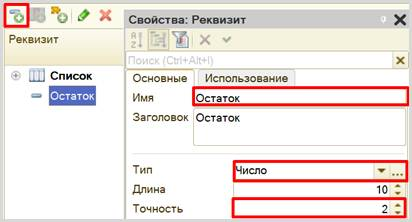
Чтобы реквизит был виден на форме, удерживая левую кнопку мыши, перенесите его на элемент «Форма», чтобы он расположился под таблицей.
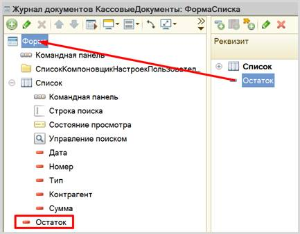
Теперь необходимо изменить вид данного элемента. Открываем его свойства и меняем вид с «Поле ввода» на «Поле надписи».
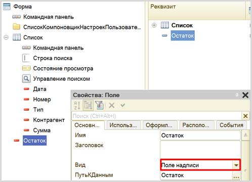
Данное поле не может заполниться само по себе. Оно будет заполняться по происшествии в системе какого-либо события. В нашем случае, необходимо, чтобы остаток денежных средств заполнялся всегда при открытии данной формы.
Создадим такое событие. Щелкнем на элемент «Форма» правой кнопкой мыши и в контекстном меню выберем пункт «События». Среди предложенных событий выберем «ПриСозданииНаСервере».
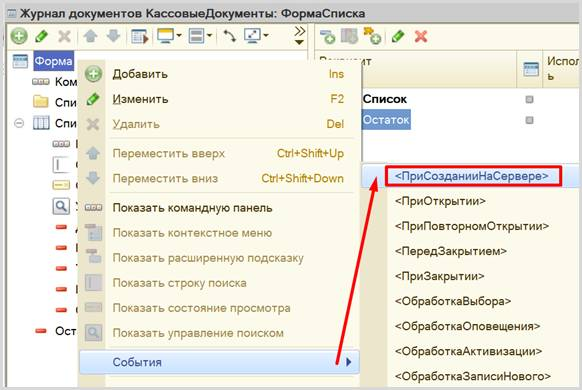
Откроется модуль формы, в котором будет представлен шаблон процедуры.
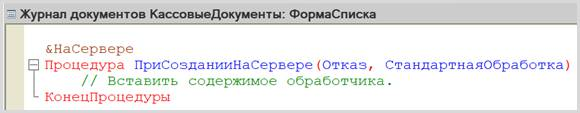
Алгоритм, описанный внутри данной процедуры, выполнится единожды при создании новой формы. Но нам нужно делать пересчет остатка каждый раз, когда мы добавляем новый документ в Журнал документов.
Возвращаемся на форму с помощью вкладки в нижней части конструктора форм.
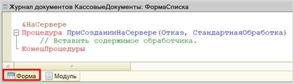
На этот раз следует описать событие не для работы формы в целом, а для ее элемента «Список». Аналогично вызываем контекстное меню, выбираем в меню «События» à «ПриИзменении».
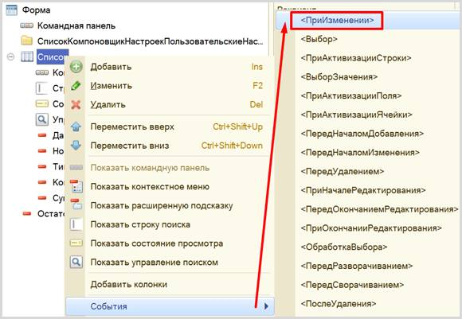
Для решения поставленной задачи обращаться к серверу нет нужды, поэтому выберем обработчик события на стороне клиента.
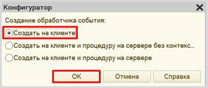
Теперь модуль формы выглядит следующим образом:
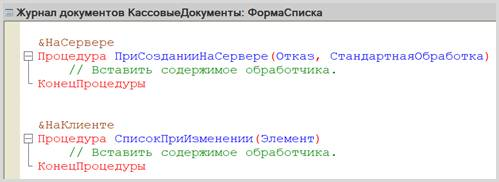
Обе эти процедуры будут делать одинаковые действия, а именно – вызывать функцию, которая будет рассчитывать остаток денежных средств в кассе и передавать данные в реквизит «Остаток».
Создадим собственную функцию. Для этого спуститесь в самый низ модуля, ниже описанных процедур, наберите «Функ» и нажмите комбинацию клавиш Ctrl+Q. Система предложим вам на выбор несколько вариантов создания шаблона. Нам нужна самая обычная функция.
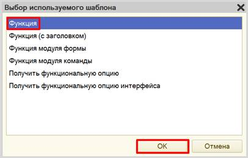
На следующем этапе необходимо дать функции имя. Назовем ее «ПолучитьОстаток».
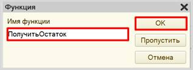
Система сформирует шаблон для написания функции. Далее нужно добавить директиву компиляции, то есть дать функции понять, на чьей стороне она будет обрабатываться – на стороне клиента или сервера.
Поскольку данная функция должна будет обращаться к базе данных за получением данных в регистре накопления, а доступ к базе данных всегда имеется только со стороны сервера, то нам нужна директива сервера. Скопируйте ее у процедуры «ПриСозданииНаСервере» и поместите перед функцией. В результате модуль должен выглядеть следующим образом:
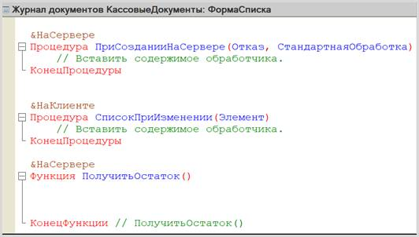
Для начала следует разобраться с функцией «ПолучитьОстаток». Эта процедура должна обратиться к данным регистра накопления и получить из него актуальный остаток в кассе.
Опишем получение остатков с помощью конструктора запроса с обработкой результата. Такой запрос позволит не только получить данные из базы данных, но и обработать их результат. Для этого необходимо установить курсор внутри функции, а затем вызвать контекстное меню правой кнопкой мыши и выбрать пункт «Конструктор запроса с обработкой результата…».
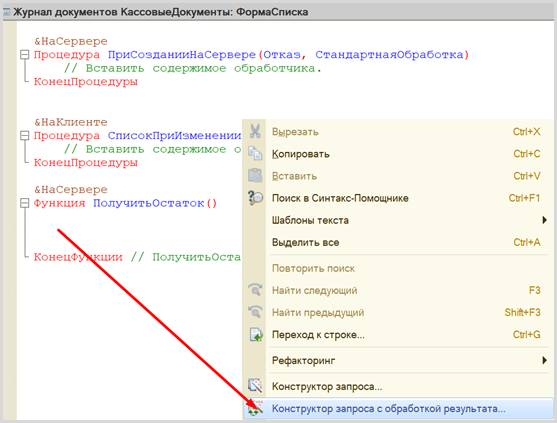
Система выдаст предупреждение о том, что запрос найден не был, и предложит создать свой. Соглашаемся.
На вкладке «Обработка результата» установите тип обработки в значение «Обход результата».
Далее переходим на вкладку «Таблицы и поля». Данное окно имеет три части:
q Часть слева отображает все объекты конфигурации, имеющиеся в нашей базе данных. Необходимо выбрать лишь те объекты, из которых мы хотим получать данные.
q Посередине находятся таблицы – это выбранные нами объекты, откуда мы хотим получать данные для конкретного отчета.
q Справа поля – это те значения (поля), которые мы хотим увидеть в отчете.
Данные будем брать не из регистра накоплений напрямую, а из виртуальной таблицы, которую создает этот регистр автоматически. Эта виртуальная таблица позволит получить уже просуммированные значения по всем документам.
Чтобы перенести данные из одного окна в другое, просто перетащите
нужные поля с помощью мыши либо воспользуйтесь стрелочками, расположенными
между окнами.
В результате работы с конструктором получен готовый программный модуль, извлекающий сумму остатка денег в кассе.
Запрос будет либо возвращать одно значение, либо ничего не возвращать.
Немного изменим логику, которую создал конструктор, и вместо цикла опишем следующее условие:
Обратите внимание на служебное слово «Возврат». Оно будет возвращать остаток денежных средств в кассе. Если же остаток в кассе будет иметь значение «0», тогда запрос ничего не вернет, а мы с помощью условия заставим функцию вернуть значение «0».
Таким образом, мы сформировали функцию, которая возвращает остаток денег в кассе.
Функция «ПолучитьОстаток» возвращает значение, которое необходимо передать в созданный ранее реквизит «Остаток». Значение остатка должно быть получено в обеих процедурах – «ПриСозданииНаСервере» и «СписокПриИзменении».
Внимание!
Обязательно проверьте модуль на наличие синтаксических ошибок!
Для этого нажмите на кнопку проверки модуля и исправляйте ошибки до тех пор, пока в окне «Служебные сообщения» не появится надпись «Синтаксических ошибок не обнаружено».
Если ошибок нет, то пора приступить к проверке результатов. Запустите конфигурацию в режиме «1С:Предприятие» и откройте Журнал документов.
Осталось лишь решить задачу, связанную с нумерацией.
Обратите внимание, что в Журнале документов нумерация считается отдельно для каждого типа документов.
Сделаем нумерацию сквозной, то есть общей для двух видов документов.
Информация
Для того чтобы документы разного вида имели сквозную нумерацию, в системе предусмотрен объект «Нумератор». Прочитать подробнее про нумераторы можно здесь: https://v8.1c.ru/platforma/numerator/.
Добавьте нумератор «КассовыеДокументы».
Сделаем так, чтобы нумерация документов сбрасывалась каждый год: таким образом, пользователь не сможет создать большее количество документов, чем мы предусмотрели.
Перейдем на вкладку «Данные» и настроим нумератор следующим образом:
Теперь нужно присвоить нумератор всем видам документов, которые должны иметь сквозную нумерацию. В нашем случае – это документы «ПКО» и «РКО».
Откройте окно редактирования документа «ПКО» на вкладке «Нумерация». В качестве нумератора выберите созданный нумератор «КассовыеДокументы».
Аналогично добавьте нумератор в документ «РКО».
Откройте систему в режиме «1С:Предприятие» и проверьте правильность выполнения работы. Для этого придется удалить созданные ранее документы и создать новые в различном порядке. Следите за полем остатка!
Обратите внимание, что система не контролирует отрицательные остатки!
Поставленная задача решена.